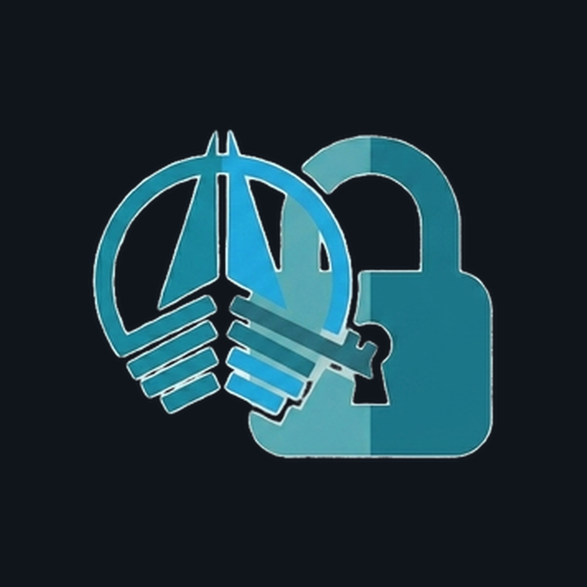

Démarrage…
Connexion nécessaire une première fois (avec internet) pour activer le mode hors-ligne.
Aucune tâche en cache pour l'instant.
Ouvrez l'app avec internet au moins une fois pour que vos tâches soient disponibles hors-ligne.